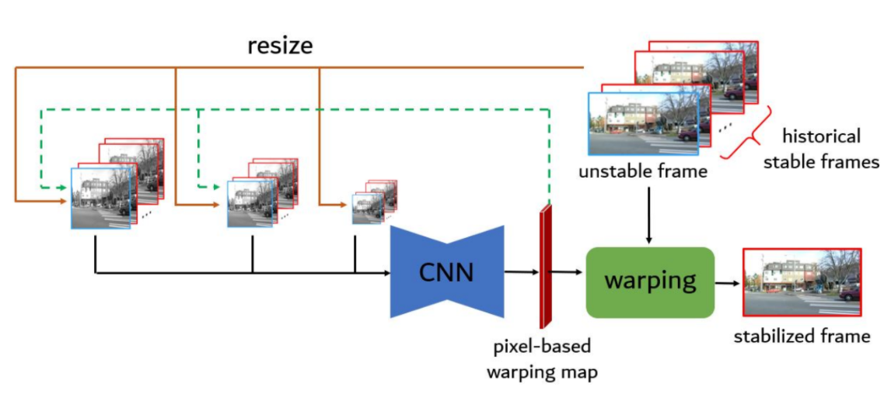

<!DOCTYPE html>
<html>
<head>
	<title>Yao-Chih Lee</title>
	<link href="css/bootstrap.css" rel="stylesheet">
	<link rel="stylesheet" type="text/css" href="css/styles.css">
	
	<link href="css/fontawesome-all.css" rel="stylesheet">
	<meta name="viewport" content="width=device-width, initial-scale=1.0">
	<link rel="icon" href="images/cube-solid.svg">
</head>
<body>
	<div class="container">
		<div class="intro">
			<div class="row">
				<div class="col-lg-8">
					<h1 class="name"><strong>Yao-Chih</strong> Lee</h1>
					<!--<span class="job-title">Ph.D. Student</span>-->
					<!--<span class="email">yclee@umd.edu</span>-->
					<h2 class="lead">Ph.D. Student
					<br/>Department of Computer Science
					<br/>University of Maryland College Park</h2>
				</div>
				<div class="col-lg-4">
					
				</div>
			</div>
			<p>I am a second-year CS Ph.D. student at the University of Maryland, College Park, advised by <a href="https://jbhuang0604.github.io/">Jia-Bin Huang</a>. 
				My research interests lie in the fields of 3D Computer Vision and Video Synthesis.</p>
			<p>I am honored to work with <a href="https://pages.cs.wisc.edu/~fliu/">Feng Liu</a> at Adobe, <a href="https://imp.iis.sinica.edu.tw/">Chu-Song Chen</a> at Academia Sinica,
				<a href="https://www.csie.ntu.edu.tw/~hung/index.html#about">Yi-Ping Hung</a> at National Taiwan University, and <a href="http://covis.cs.nctu.edu.tw/advisor.php">Kuan-Wen Chen</a> at National Chiao Tung University, Taiwan.</p>
			
			<a class="btn" href="mailto:yclee@umd.edu"><i class="fab fas fa-envelope"></i>&#20 email</a>
			<a class="btn" href="https://yaochih.github.io/files/cv.pdf"><i class="fab fas fa-file-alt"></i>&#20 Curriculum Vitae</a>
			<a class="btn" href="https://www.linkedin.com/in/yao-chih-lee/"><i class="fab fa-linkedin-in"></i>&#20 LinkedIn</a>
			<a class="btn" href="https://github.com/yaochih"><i class="fab fa-github"></i>&#20 Github</a>
		</div>
		
	</div>

	<!-- Timeeline -->

	<div class="container">
		<h2 class="section-title timeline">Experience</h2>
		<ol class="timeline">
		  <li>
		    <span class="point"></span>
			<span class="date">Today - Aug. 2022</span>
		    <p class="description">
		      Ph.D. Student<br>
			  University of Maryland <br>College Park
		    </p>
		  </li>

		  <li>
		    <span class="point"></span>
			<span class="date">Aug. 2023 - May. 2023</span>
		    <p class="description">
		      Research Intern<br>
			  Adobe
		    </p>
		  </li>

		  <li>
		    <span class="point"></span>
			<span class="date">Mar. 2022 - Sep. 2020</span>
		    <p class="description">
		      Research Assistant<br>
			  Academia Sinica, Taiwan
		    </p>
		  </li>
		
		  <li>
		    <span class="point"></span>
			<span class="date">Jun. 2020 - Sep. 2018</span>
		    <p class="description">
		      M.S.<br>
			  National Taiwan University
		    </p>
		  </li>

		  <li>
		    <span class="point"></span>
			<span class="date">Jun. 2018 - Sep. 2014</span>
		    <p class="description">
		      B.S.<br>
			  National Chiao Tung University
		    </p>
		  </li>
		</ol>

	</div>
	<br><br>
	<!-- Publications -->

	<div class="container" style="margin-top: 80px">
		<h2 class="section-title">Publications</h2>

		<div class="row publication">
			<div class="col-lg-4">
				
			</div>
			<div class="col-lg-8">
				<p class="title">Shape-aware Text-driven Layered Video Editing</p>
				<p class="author">Yao-Chih Lee, <a href="#">Ji-Ze Genevieve Jang</a>, <a  href="https://jamie725.github.io/website/">Yi-Ting Chen</a>, <a href="https://elizabethqiu.com/">Elizabeth Qiu</a>, <a href="https://jbhuang0604.github.io/">Jia-Bin Huang</a></p>
				<p class="publish">CVPR 2023</p>
				<a class="btn" href="https://text-video-edit.github.io/">
					<i class="fab fas fa-globe-asia"></i>&#20 Project page</a>
				<a class="btn" href="https://openaccess.thecvf.com/content/CVPR2023/papers/Lee_Shape-Aware_Text-Driven_Layered_Video_Editing_CVPR_2023_paper.pdf">
					<i class="fab fas fa-file-alt"></i>&#20 Paper</a>
			</div>
		</div>

		<div class="row publication">
			<div class="col-lg-4">
				
			</div>
			<div class="col-lg-8">
				<p class="title">Text-driven Visual Synthesis with Latent Diffusion Prior</p>
				<p class="author"><a href="https://tinghliao.github.io/">Ting-Hsuan Liao</a>, <a  href="http://songweige.github.io/">Songwei Ge</a>, <a href="https://twizwei.github.io/">Yiran Xu</a>, <b>Yao-Chih Lee</b>, <a href="https://badouralbahar.github.io/">Badour AlBahar</a>, <a href="https://jbhuang0604.github.io/">Jia-Bin Huang</a></p>
				<p class="publish">arXiv preprint 2023</p>
				<a class="btn" href="https://latent-diffusion-prior.github.io/">
					<i class="fab fas fa-globe-asia"></i>&#20 Project page</a>
				<a class="btn" href="https://arxiv.org/abs/2301.13173">
					<i class="fab fas fa-file-alt"></i>&#20 Paper</a>
			</div>
		</div>

		<div class="row publication">
			<div class="col-lg-4">
				
			</div>
			<div class="col-lg-8">
				<p class="title">GCVD: Globally-Consistent Video Depth and Pose Estimation with Efficiency</p>
				<p class="author"><b>Yao-Chih Lee</b>, <a href="https://kuan-wei-tseng.github.io/">Kuan-Wei Tseng</a>, Guan-Sheng Chen, <a href="https://imp.iis.sinica.edu.tw/">Chu-Song Chen</a></p>
				<p class="publish">arXiv preprint 2022</p>
				<a class="btn" href="https://arxiv.org/abs/2208.02709">
					<i class="fab fas fa-file-alt"></i>&#20 Paper</a>
				<a class="btn" href="https://github.com/yaochih/GCVD-release">
					<i class="fab fa-github"></i>&#20 Code</a>
			</div>
		</div>

		<div class="row publication">
			<div class="col-lg-4">
				
			</div>
			<div class="col-lg-8">
				<p class="title">3D Video Stabilization with Depth Estimation by CNN-based Optimization</p>
				<p class="author">Yao-Chih Lee, <a href="https://kuan-wei-tseng.github.io/">Kuan-Wei Tseng</a>, Yu-Ta Chen, Chien-Cheng Chen, <a href="https://imp.iis.sinica.edu.tw/">Chu-Song Chen</a>, <a href="https://www.csie.ntu.edu.tw/~hung/index.html#about">Yi-Ping Hung</a></p>
				<p class="publish">CVPR 2021</p>
				<a class="btn" href="https://yaochih.github.io/deep3d-stabilizer.io/">
					<i class="fab fas fa-globe-asia"></i>&#20 Project page</a>
				<a class="btn" href="https://openaccess.thecvf.com/content/CVPR2021/papers/Lee_3D_Video_Stabilization_With_Depth_Estimation_by_CNN-Based_Optimization_CVPR_2021_paper.pdf">
					<i class="fab fas fa-file-alt"></i>&#20 Paper</a>
				<a class="btn" href="https://github.com/yaochih/Deep3D-Stabilizer-release">
					<i class="fab fa-github"></i>&#20 Code</a>
				<a class="btn" href="https://youtu.be/pMluFVA7NDQ">
					<i class="fab fa-youtube"></i>&#20 Video</a>
				<a class="btn" href="https://github.com/yaochih/awesome-video-stabilization">
					<i class="fab fas fa-list-ul"></i>&#20 Awesome video stabilization</a>
			</div>
		</div>

		<div class="row publication">
			<div class="col-lg-4">
				
			</div>
			<div class="col-lg-8">
				<p class="title">PixStabNet: Fast Deep Online Video Stabilization</p>
				<p class="author">Yu-Ta Chen, <a href="https://kuan-wei-tseng.github.io/">Kuan-Wei Tseng</a>, Yao-Chih Lee, Chun-Yu Chen, and <a href="https://www.csie.ntu.edu.tw/~hung/index.html#about">Yi-Ping Hung</a></p>
				<p class="publish">ICIP 2021</p>
				<a class="btn" href="https://ieeexplore.ieee.org/document/9506801">
					<i class="fab fas fa-file-alt"></i>&#20 Paper</a>
			</div>
		</div>

		<div class="row publication">
			<div class="col-lg-4">
				
			</div>
			<div class="col-lg-8">
				<p class="title">Part-aware Measurement for Robust Multi-View Multi-Human 3D Pose Estimation and Tracking</p>
				<p class="author">Hau Chu, Jia-Hong Lee, Yao-Chih Lee, Ching-Hsien Hsu, Jia-Da Li, and <a href="https://imp.iis.sinica.edu.tw/">Chu-Song Chen</a></p>
				<p class="publish">CVPR Workshop 2021</p>
				<a class="btn" href="https://arxiv.org/abs/2106.11589">
					<i class="fab fas fa-file-alt"></i>&#20 Paper</a>
			</div>
		</div>
	</div>
	<!-- End of publications -->

	<br><br><br><br>


	<footer class="container">
		<span style="font-size: 16px; margin-top: ">Coded by <a href="https://newtodesign.com/">New to design </a> Designed by <a href="https://dribbble.com/shots/4342703-Minimal-resume-freebie-for-junior-self-taught-people">Nicolas Meuzard</a></span>
	</footer>


</body>
</html>